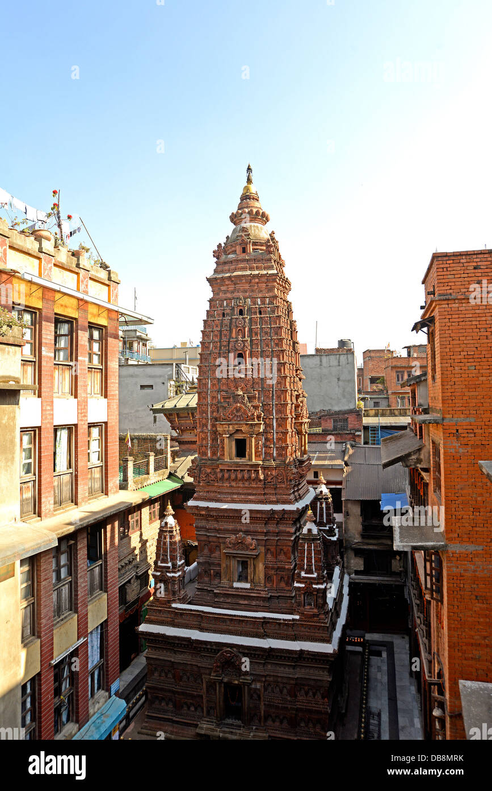

Mahaboudha Temple

About
Mahaboudha Temple is a shikhara Newar Buddhist temple in Lalitpur, Nepal.
The temple dates back to 1585 and it was rebuilt after the 1934 Nepal–India earthquake. Mahaboudha's design is loosely based on the Mahabodhi Temple, Bodh Gaya